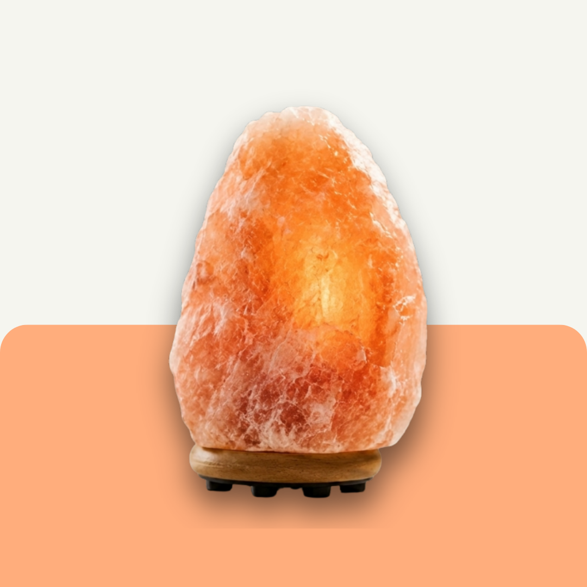
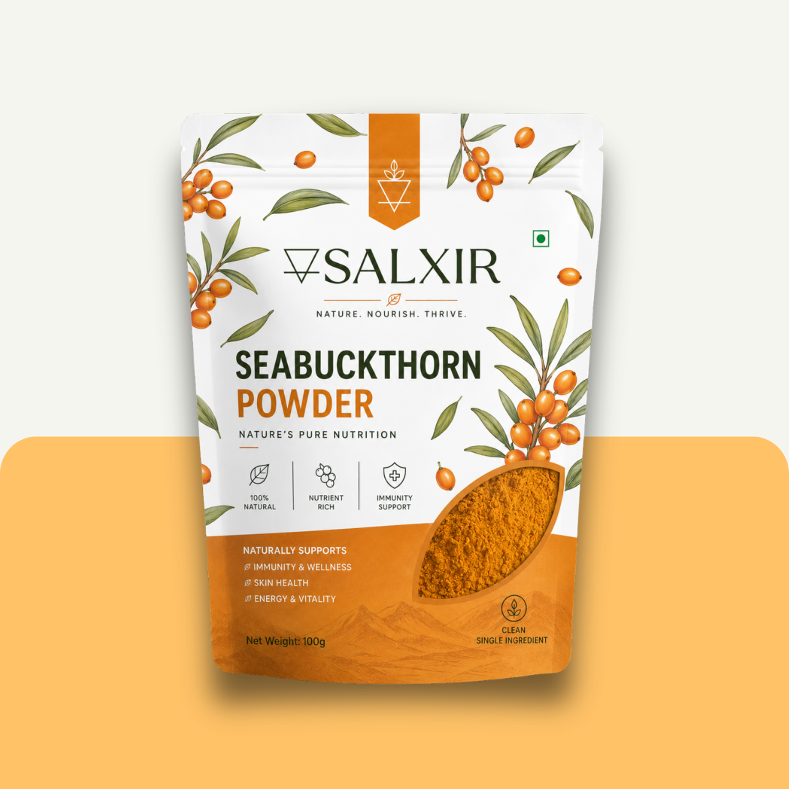
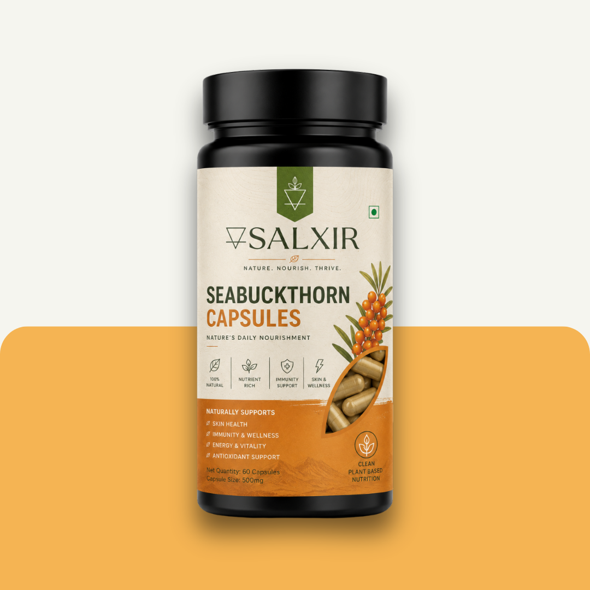
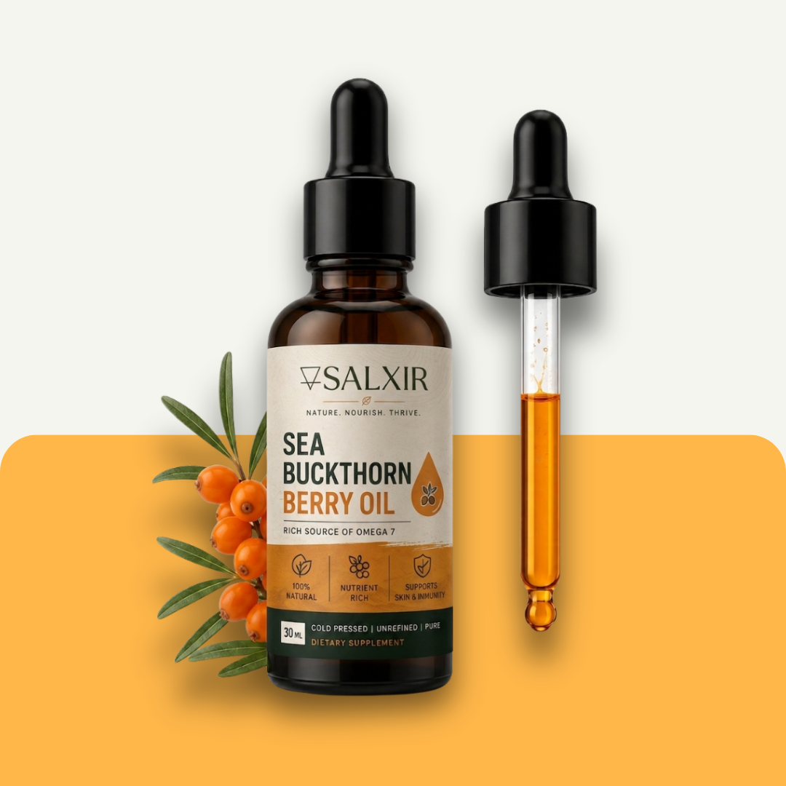
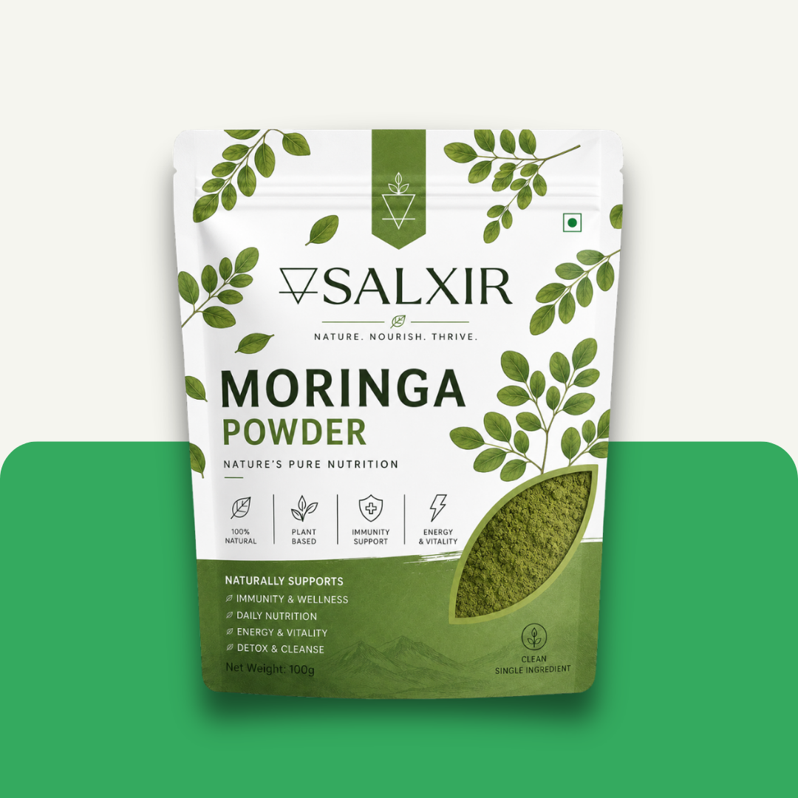
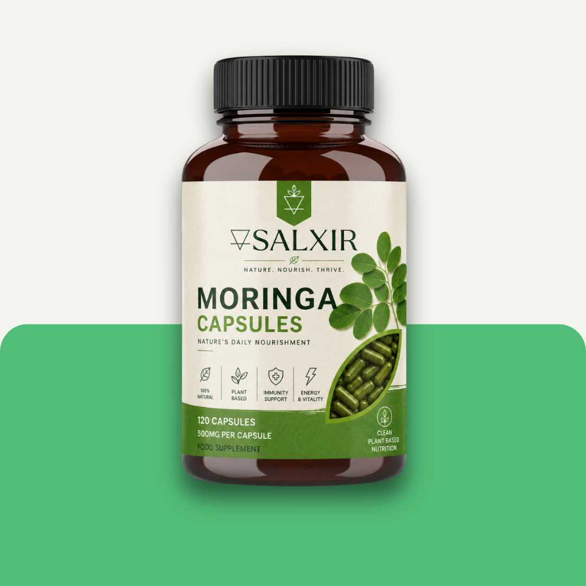
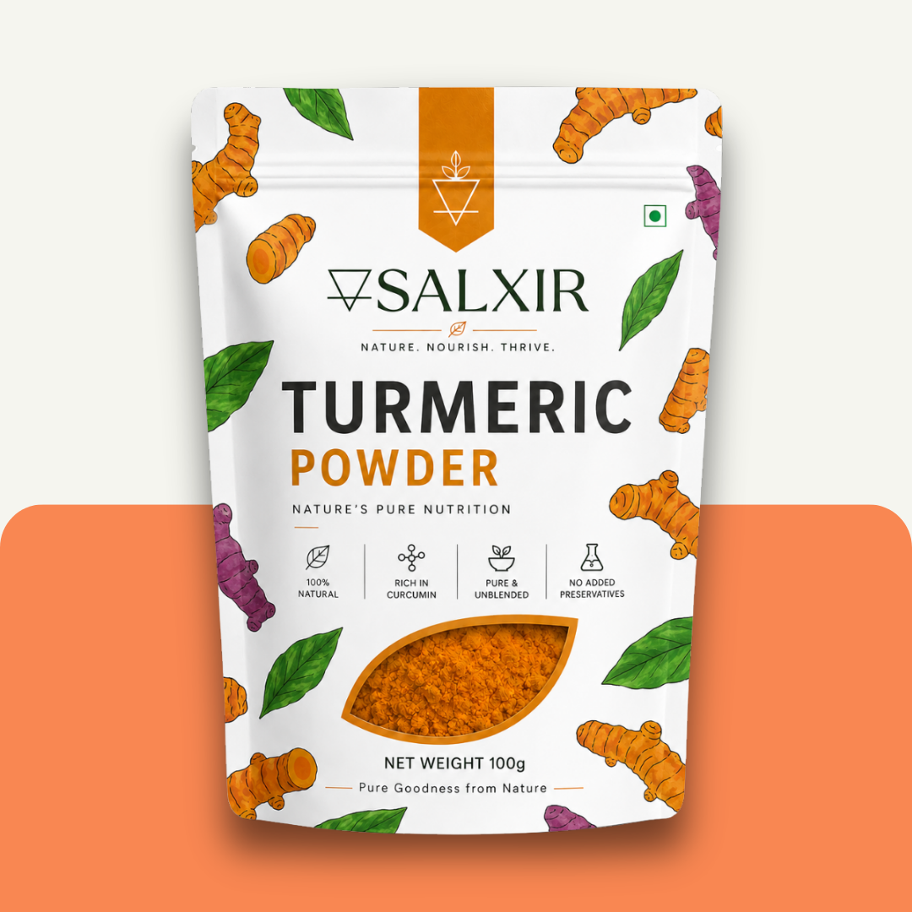
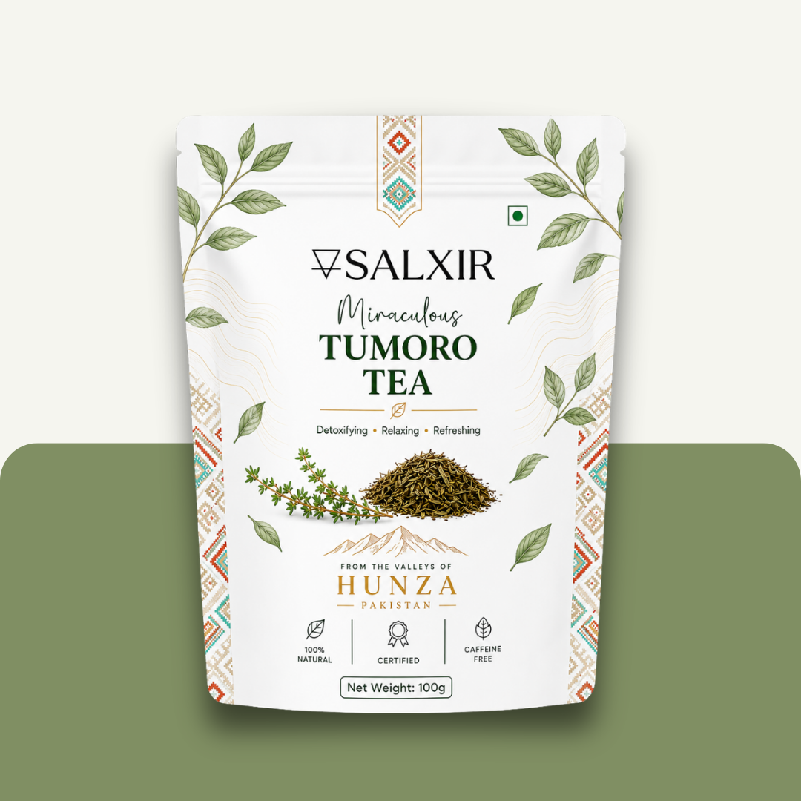

Clean, natural essentials crafted to support your everyday wellness.

Shilajit Resin is a rare natural substance traditionally harvested from the Himalayan and Karakoram mountain ranges, including regions of Gilgit-Baltistan. Formed over centuries through the gradual decomposition of plant matter and minerals within mountain rocks, Shilajit has historically been valued in traditional wellness systems for strength, endurance, vitality, and recovery support.
How to use: Traditionally consumed by dissolving a small pea-sized amount into warm water, tea, or milk. Many users consume it during morning routines or before physical activity.

This formulation combines purified Himalayan Shilajit with Ashwagandha in convenient daily capsules, a traditional adaptogenic blend used for centuries in Ayurvedic wellness practices.
How to use: Typically consumed once or twice daily with water. Consistent capsule serving sizes make it easy to integrate into your routine.

Shilajit Honey Sticks combine purified Shilajit with natural honey in a convenient single-serving format. Honey has historically been valued for nutrition and natural energy, while Shilajit contributes minerals and fulvic compounds.
How to use: Consumed directly from the stick before workouts, during travel, or throughout the day.

Shilajit + Ashwagandha Honey Sticks combine purified Himalayan Shilajit, traditional Ashwagandha, and natural honey in a convenient single-serving format. Designed for balanced energy, recovery, and everyday wellness on the go.
How to use: Consumed directly from the stick, or stirred into warm water, tea, or milk.

Shilajit+ provides purified Shilajit powder in an easy-to-consume capsule form.
How to use: Consumed daily with water as part of a wellness routine.

Shilajit Tablets are compressed servings of purified Shilajit designed for easy storage and precise intake.
How to use: Typically consumed with water once or twice daily.

Himalayan Pink Salt is sourced from ancient salt deposits formed millions of years ago. Known for its natural pink color, the salt contains trace minerals that contribute to its appearance and composition.
How to use: Used in seasoning, cooking, grilling, and finishing dishes.

Pink Salt decorative items are crafted from authentic Himalayan salt crystals and blocks used in homes, spas, and wellness-inspired interiors.
How to use: Used in lamps, decorative displays, candle holders, and spa interiors.

Salxir Sea Buckthorn Powder is made from nutrient-rich sea buckthorn berries, finely ground for daily use in smoothies, bowls, and wellness routines.

Sea Buckthorn has traditionally been valued across Asia and Northern Europe for its nutritional profile and antioxidant-rich berries.
How to use: Consumed daily as part of wellness and nutritional routines.

Sea Buckthorn Oil is extracted from nutrient-rich berries and seeds traditionally valued for wellness and skincare use.
How to use: Used directly, mixed into skincare products, or consumed in controlled servings.

Moringa has been cultivated for centuries across Asia and Africa and is commonly known for its nutrient-rich leaves.
How to use: Mixed into smoothies, juices, soups, teas, and meals.

Moringa Capsules provide nutrient-rich moringa leaf powder in a practical supplement format.
How to use: Typically consumed with water once or twice daily.

Carefully sourced and finely ground from high quality turmeric roots, Salxir Turmeric Powder delivers a rich golden color, warm earthy aroma, and natural purity in every serving. Traditionally valued for generations, turmeric is widely appreciated as part of a balanced and active lifestyle.

Tumoro Tea is a botanical tea traditionally consumed for its warming and refreshing properties.
How to use: Prepared by steeping in hot water for several minutes before consumption.
At Salxir, With Love From Earth is more than a signature. It is our grounding philosophy. It represents a commitment to staying deeply connected to the natural world and respecting the exact geographic origins of everything we create. We believe that nature provides the ultimate baseline for vitality through high-altitude mountains, nutrient-dense plants, unrefined minerals, and traditional botanical sources. Our purpose is to preserve these raw, natural qualities rather than over-process or artificially modify them.
We systematically source our raw materials from pristine regions globally recognized for ecological purity and generational cultivation practices:
Our manufacturing approach focuses on absolute mineral preservation and botanical integrity. By maintaining the native compositions, enzymes, and nutritional characteristics of these active ingredients, we ensure they deliver their genuine systemic value directly to your daily wellness routine.
The Salxir standard is straightforward: keep every product as close to its raw, native state as possible. We strictly reject unnecessary chemical additives, synthetic flow agents, artificial fillers, and aggressive processing methods that compromise nutritional density.